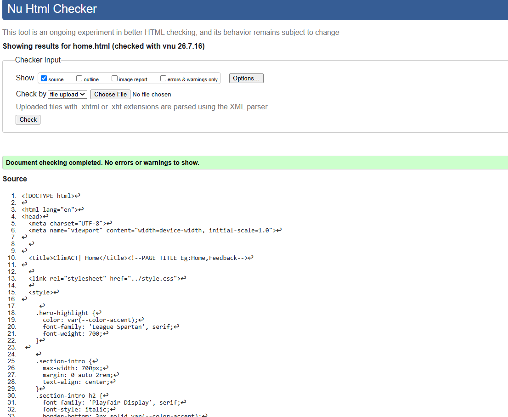
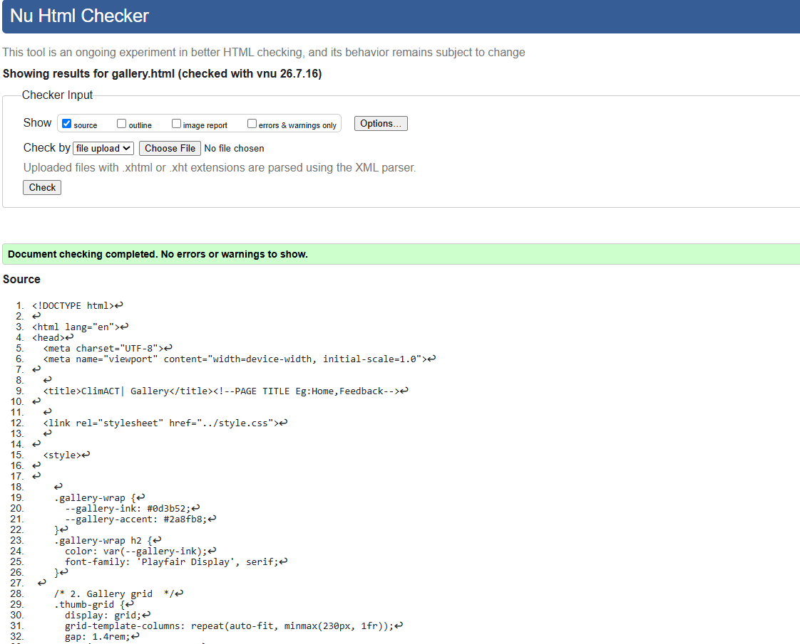
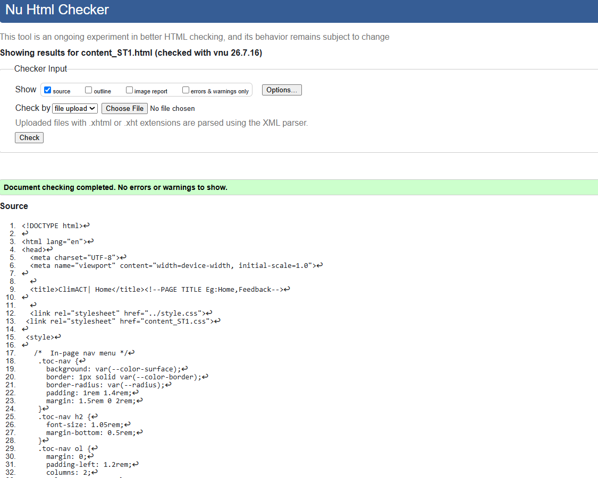

Home Page validation report
The Home page validation identified a stray <div> tag, which was caused by an extra closing tag that did not have a matching opening tag. After reviewing the page structure, the unnecessary tag was removed, resulting in properly nested HTML and a cleaner document structure.

Back to Page Editor page
Gallery Page validation report
The Gallery page validation reported an invalid </br> tag. Since <br> is a self-closing (void) HTML element, the closing tag is not valid in HTML5. This was corrected by replacing </br> with <br>, allowing the page to pass validation without affecting its appearance.

Back to Page Editor page
Content Page validation report
The Content page validation highlighted a heading hierarchy warning, where the page moved directly from an <h2> heading to an <h4> heading without using an <h3>. The heading structure was reorganised to follow the correct order, improving both accessibility and the semantic organisation of the page.
